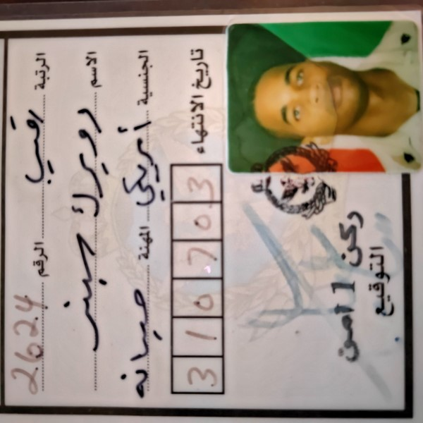

2003: Operation Enduring Freedom/Iraqi Freedom
Deployed as a Data Network systems specialist with the Marine Air Support Squadron 3 (MASS-3) in support of Operation Enduring Freedom. MASS 3 attached directly to 1stMarine Division and provided the commander with direct liason to air support as part of the Marine Air Ground Task Force (MAGTF). My primary role was to assist in the planning and deployment of command and control computer systems and to once in country ensure that network and computer systems were operational throughout combat operations.